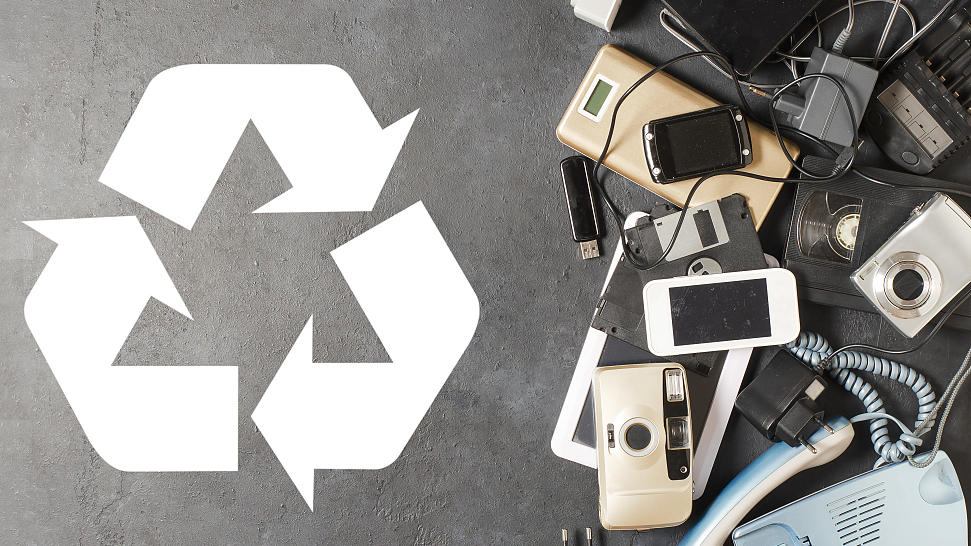

¡Únete a nosotros en la lucha por un planeta más limpio y saludable! El reciclaje de residuos electrónicos no solo preserva nuestros recursos naturales, sino que también protege nuestro medio ambiente de la contaminación y la degradación. Cada dispositivo electrónico reciclado es una oportunidad para reducir la huella de carbono y conservar valiosos recursos. Al reciclar tus dispositivos electrónicos, estás contribuyendo directamente a la conservación de la naturaleza y a la reducción de la contaminación. ¡No esperes más! Haz tu parte hoy mismo y únete al movimiento global de reciclaje de residuos electrónicos. Juntos, podemos marcar la diferencia y construir un mundo más limpio y verde para todos.
